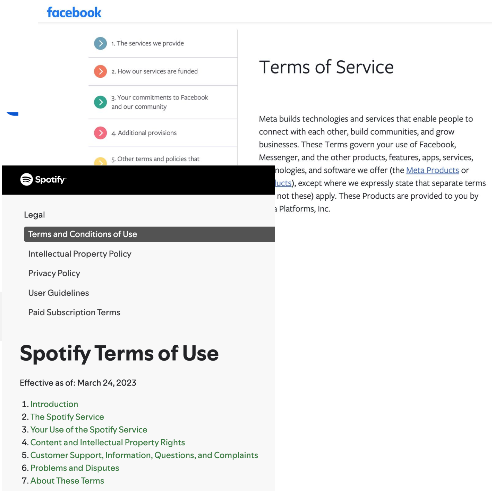
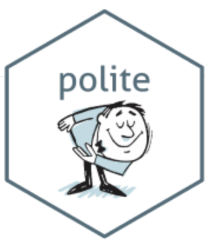
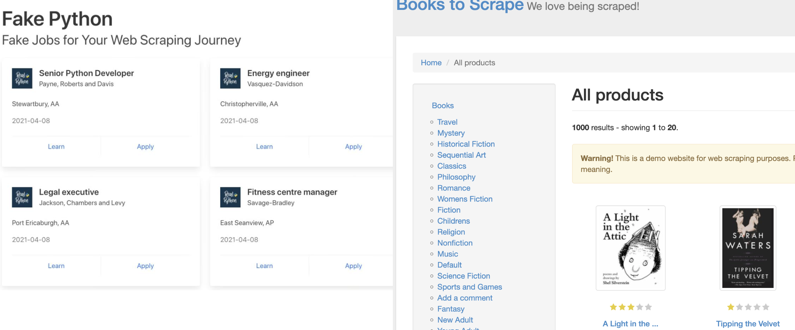
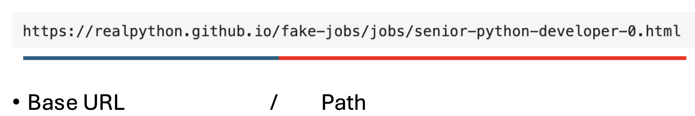

[1] TRUEJust because you can scrape it, doesn’t mean you should.
If the data isn’t public, non-personal, or factual or you’re scraping the data specifically to make money with it, you’ll need to talk to a lawyer.
robots.txt
Always check if a website allows scraping before you begin.
robots.txt?https://example.com/robots.txtDisallow: rulesUser-agent: * = rules apply to all botsDisallow: /private/ = don’t access /private/Disallow: / = Disallows everything.Disallow: = Disallows nothingAllow: / = overrides Disallow, Allows everything.We can evaluate whether the default user-agent (*) is allowed to access/scrape Wikipedia’s homepage (path /): - Use robotstxt package in R:
What if we want to inspect deeper:
R:
Python:
R: polite — handles polite scraping (automatic pauses and caching)
Python: write a sleep() wrapper or use retry logic with exponential backoff
429 Too Many Requests403 Forbidden after rapid burstsThe three pillars of a polite session:
bow() checks robots.txt and creates a session that respects allowed paths.{polite} automatically inserts delays between requests to avoid overwhelming servers.{polite} uses local caching, storing previously downloaded pages so the same request isn’t repeated unless forced.library(polite)
library(rvest)
session <- bow("https://www.cheese.com/by_type", force = TRUE)
result <- scrape(session, query=list(t="semi-soft", per_page=100)) %>%
html_node("#main-body") %>%
html_nodes("h3") %>%
html_text()
head(result)[1] "American Cheese" "Mozzarella" "Taleggio"
[4] "Fontina Val d'Aosta" "Blue Cheese" "Jarlsberg" 
→ Choose your source website and inspect the page (HTML structure, URL patterns). Example: https://realpython.github.io/fake-jobs/


Open Developer Tools:
→ Send a request to the server (requests in Python or read_html() in R) → Use tools like BeautifulSoup (Python) or rvest (R) to navigate the DOM (Document Model Object) and find the right elements
→ Pull out the relevant text, attributes, tables, or links.
[1] "\n Stewartbury, AA\n "
[2] "\n Christopherville, AA\n "
[3] "\n Port Ericaburgh, AA\n "
[4] "\n East Seanview, AP\n "
[5] "\n North Jamieview, AP\n "
[6] "\n Davidville, AP\n " → Remove unwanted characters, convert to tables, reshape into data frames
## In R
library(dplyr)
locations <- page %>%
html_elements("p.location") %>%
html_text(trim = TRUE)
df_locations <- tibble(location = locations)
print(head(df_locations))# A tibble: 6 × 1
location
<chr>
1 Stewartbury, AA
2 Christopherville, AA
3 Port Ericaburgh, AA
4 East Seanview, AP
5 North Jamieview, AP
6 Davidville, AP → Scrape multiple pages, automate with loops or polite crawling.
Example: https://books.toscrape.com/
# In R
titles <- c()
prices <- c()
for (page in 1:3) {
url <- paste0("https://books.toscrape.com/catalogue/page-", page, ".html")
html <- read_html(url)
titles <- c(titles, html %>% html_elements("article h3 a") %>% html_attr("title"))
prices <- c(prices, html %>% html_elements(".price_color") %>% html_text())
}
books_df <- tibble(title = titles, price = prices)
print(head(books_df))# A tibble: 6 × 2
title price
<chr> <chr>
1 A Light in the Attic £51.77
2 Tipping the Velvet £53.74
3 Soumission £50.10
4 Sharp Objects £47.82
5 Sapiens: A Brief History of Humankind £54.23
6 The Requiem Red £22.65## In python
locations = []
titles = []
prices = []
for page in range(1, 4): # scrape first 3 pages
url = f"https://books.toscrape.com/catalogue/page-{page}.html"
res = requests.get(url)
soup = BeautifulSoup(res.text, "html.parser")
books = soup.select("article.product_pod")
for book in books:
titles.append(book.h3.a["title"])
prices.append(book.select_one("p.price_color").text)
df = pd.DataFrame({"title": titles, "price": prices})
print(df.head()) title price
0 A Light in the Attic £51.77
1 Tipping the Velvet £53.74
2 Soumission £50.10
3 Sharp Objects £47.82
4 Sapiens: A Brief History of Humankind £54.23HTML = HyperText Markup Language
There are over 100 HTML elements.
Block elements → Structure the page
e.g., <h1>, <section>, <p>, <ol>
Inline elements → Format content within block tags e.g., <b>, <i>, <a>
If you see an unfamiliar tag:
→ Google it or check MDN Web Docs
| Purpose | Tag | Description |
|---|---|---|
| Structure | <html> |
Root element of the page |
| Metadata | <head> |
Metadata (title, links, scripts) |
| Title | <title> |
Page title (shown in tab) |
| Content holder | <body> |
Visible content of the page |
| Headings | <h1>–<h6> |
Headings from most to least important |
| Paragraph | <p> |
A block of text |
| Section | <section> |
Logical section of a page |
| Ordered list | <ol> |
Numbered list |
| Unordered list | <ul> |
Bulleted list |
| List item | <li> |
List item |
| Link | <a> |
Hyperlink |
| Image | <img> |
Embed image |
| Bold | <b> |
Bold text |
| Italic | <i> |
Italic text |
| Line break | <br> |
New line |
| Division | <div> |
Generic block-level container |
| Inline span | <span> |
Generic inline container |
Attributes provide extra information about HTML elements and are placed inside the opening tag.
| Attribute | Description | Example |
|---|---|---|
id |
Uniquely identifies an element | <div id="main"> |
class |
Categorizes elements for styling/scraping | <p class="quote"> |
href |
URL destination for links | <a href="https://..."> |
src |
Source file for images | <img src="image.jpg"> |
alt |
Alternative text for images | <img alt="description"> |
title |
Tooltip text when hovering | <span title="Hint"> |
id and class help target content precisely (via Cascading Style Sheets selectors)href and src are how you extract links and image URLsCSS selectors are patterns used to select elements on a web page.
Originally used for styling in Cascading Style Sheets (CSS), selectors are incredibly useful in scraping because they help us target exactly what we want.
| Selector | Matches | Example HTML |
|---|---|---|
p |
All <p> elements |
<p>Text</p> |
.title |
Elements with class=“title” | <h2 class="title">Hello</h2> |
#title |
Element with id=“title” (must be unique) | <h1 id="title">Header</h1> |
. selects classes → use for grouping# selects IDs → unique identifiersYou’ll use these with html_elements() in R or .select() in Python
# In R
html <- minimal_html("
<h1>This is a heading</h1>
<p id='first'>This is a paragraph</p>
<p class='important'>This is an important paragraph</p>
")
html |> html_elements("p"){xml_nodeset (2)}
[1] <p id="first">This is a paragraph</p>
[2] <p class="important">This is an important paragraph</p>{xml_nodeset (1)}
[1] <p class="important">This is an important paragraph</p># In Python
html = """
<h1>This is a heading</h1>
<p id='first'>This is a paragraph</p>
<p class='important'>This is an important paragraph</p>
"""
soup = BeautifulSoup(html, "html.parser")
soup.select("p")[<p id="first">This is a paragraph</p>, <p class="important">This is an important paragraph</p>]Choosing the correct CSS selector is often the trickiest part of scraping.
class, id, etc.)